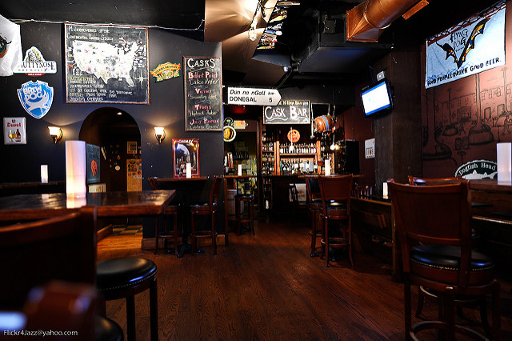

Come one come all to High 5 Sports Bar. This is the place where you want to come to relax. We have savory foods made from our five-star chef, Bob Cooker, featured on the television show Bronze Chef. Choose from traditional meals such as burgers or hotdogs or try the fan favorite Italian Sausage and Peppers. Whatever you choose, you'll be making the right choice. We have free arcade machines for the kids, pool tables for the "cool" kids, and a great happy hour for the adults. Here at High 5, we treat you right and guarantee world class food. Come in today!
